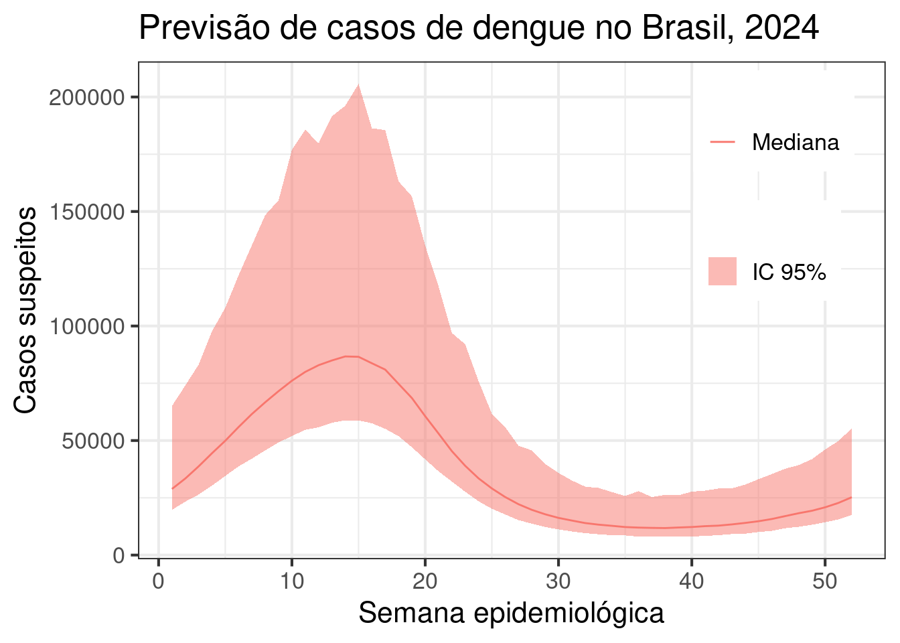

| UF | Mediana de casos | LI | LS | Incidência mediana | LI | LS |
|---|---|---|---|---|---|---|
| BR | 1960460 | 1462310 | 4225885 | 956.11 | 713.16 | 2060.94 |
| AC | 15204 | 3469 | 62169 | 1797.00 | 409.95 | 7347.65 |
| AL | 13874 | 2289 | 124061 | 443.45 | 73.15 | 3965.28 |
| AM | 12318 | 4899 | 38010 | 306.62 | 121.95 | 946.15 |
| AP | 1496 | 253 | 8797 | 201.00 | 34.00 | 1182.15 |
| BA | 65599 | 29987 | 202920 | 463.39 | 211.83 | 1433.42 |
| CE | 70111 | 29262 | 236656 | 792.37 | 330.72 | 2674.61 |
| DF | 27539 | 3172 | 258534 | 963.50 | 110.98 | 9045.27 |
| ES | 46427 | 17055 | 231644 | 1194.54 | 438.82 | 5960.11 |
| GO | 153002 | 92104 | 285553 | 2116.07 | 1273.84 | 3949.30 |
| MA | 8380 | 3194 | 29224 | 123.09 | 46.92 | 429.22 |
| MG | 263546 | 134606 | 782328 | 1273.44 | 650.41 | 3780.16 |
| MS | 54940 | 17768 | 223822 | 1961.06 | 634.22 | 7989.23 |
| MT | 36391 | 15501 | 135284 | 967.13 | 411.96 | 3595.34 |
| PA | 13877 | 7576 | 30252 | 169.69 | 92.64 | 369.92 |
| PB | 22152 | 8119 | 81145 | 552.55 | 202.52 | 2023.98 |
| PE | 61073 | 19231 | 286027 | 671.00 | 211.28 | 3142.54 |
| PI | 9640 | 4443 | 23745 | 292.61 | 134.87 | 720.79 |
| PR | 158119 | 57083 | 734737 | 1361.96 | 491.68 | 6328.67 |
| RJ | 39687 | 12339 | 185247 | 247.04 | 76.81 | 1153.09 |
| RN | 25488 | 8837 | 85162 | 766.61 | 265.78 | 2561.43 |
| RO | 8288 | 2312 | 36132 | 523.17 | 145.92 | 2280.88 |
| RR | 2906 | 1028 | 8254 | 435.50 | 154.00 | 1237.02 |
| RS | 13793 | 2971 | 156415 | 126.45 | 27.23 | 1433.89 |
| SC | 31885 | 7619 | 349166 | 408.47 | 97.60 | 4473.08 |
| SE | 5784 | 558 | 71308 | 259.00 | 25.00 | 3193.17 |
| SP | 526422 | 303240 | 1508895 | 1171.21 | 674.66 | 3357.07 |
| TO | 21059 | 6383 | 76564 | 1373.87 | 416.42 | 4995.02 |
Previsão para casos suspeitos de dengue nas macro regiões de saúde do Brasil, 2024
Previsões para 2024
Previsões para os casos suspeitos (casos notificados no SINAN) de dengue por semana epidemiológica nas 118 macro regioes do Brasil usando um modelo estatístico de previsão e dados a partir de 2015.
A partir das previsões para as macrorregiões podemos reagregar e estimar totais de casos suspeitos de dengue por UF e para o Brasil.
Brasil

Em 2024, esperamos para o Brasil um total de 1960460 casos suspeitos de dengue, essa previsão pode variar entre 1462310 e 4225885 casos.
Região Norte
AC
AC terá uma incidência anual de 1797 casos suspeitos de dengue por 100 mil habitantes. Com um total esperado de casos de 15204 casos de dengue a serem notificados em 2024.

AM
AM terá uma incidência anual de 306.62 casos suspeitos de dengue por 100 mil habitantes. Com um total esperado de casos de 12318 casos de dengue a serem notificados em 2024.


AP
AP terá uma incidência anual de 201 casos suspeitos de dengue por 100 mil habitantes. Com um total esperado de casos de 1496 casos de dengue a serem notificados em 2024.

PA
PA terá uma incidência anual de 169.69 casos suspeitos de dengue por 100 mil habitantes. Com um total esperado de casos de 13877 casos de dengue a serem notificados em 2024.


RO
RO terá uma incidência anual de 523.17 casos suspeitos de dengue por 100 mil habitantes. Com um total esperado de casos de 8288 casos de dengue a serem notificados em 2024.


RR
RR terá uma incidência anual de 435.5 casos suspeitos de dengue por 100 mil habitantes. Com um total esperado de casos de 2906 casos de dengue a serem notificados em 2024.

TO
TO terá uma incidência anual de 1373.87 casos suspeitos de dengue por 100 mil habitantes. Com um total esperado de casos de 21059 casos de dengue a serem notificados em 2024.


Região Nordeste
AL
AL terá uma incidência anual de 443.45 casos suspeitos de dengue por 100 mil habitantes. Com um total esperado de casos de 13874 casos de dengue a serem notificados em 2024.


BA
BA terá uma incidência anual de 463.39 casos suspeitos de dengue por 100 mil habitantes. Com um total esperado de casos de 65599 casos de dengue a serem notificados em 2024.


CE
CE terá uma incidência anual de 792.37 casos suspeitos de dengue por 100 mil habitantes. Com um total esperado de casos de 70111 casos de dengue a serem notificados em 2024.


MA
MA terá uma incidência anual de 123.09 casos suspeitos de dengue por 100 mil habitantes. Com um total esperado de casos de 8380 casos de dengue a serem notificados em 2024.


PB
PB terá uma incidência anual de 552.55 casos suspeitos de dengue por 100 mil habitantes. Com um total esperado de casos de 22152 casos de dengue a serem notificados em 2024.


PE
PE terá uma incidência anual de 671 casos suspeitos de dengue por 100 mil habitantes. Com um total esperado de casos de 61073 casos de dengue a serem notificados em 2024.


PI
PI terá uma incidência anual de 292.61 casos suspeitos de dengue por 100 mil habitantes. Com um total esperado de casos de 9640 casos de dengue a serem notificados em 2024.


RN
RN terá uma incidência anual de 766.61 casos suspeitos de dengue por 100 mil habitantes. Com um total esperado de casos de 25488 casos de dengue a serem notificados em 2024.


SE
SE terá uma incidência anual de 259 casos suspeitos de dengue por 100 mil habitantes. Com um total esperado de casos de 5784 casos de dengue a serem notificados em 2024.

Região Sudeste
ES
ES terá uma incidência anual de 1194.54 casos suspeitos de dengue por 100 mil habitantes. Com um total esperado de casos de 46427 casos de dengue a serem notificados em 2024.


MG
MG terá uma incidência anual de 1273.44 casos suspeitos de dengue por 100 mil habitantes. Com um total esperado de casos de 263546 casos de dengue a serem notificados em 2024.


RJ
RJ terá uma incidência anual de 247.04 casos suspeitos de dengue por 100 mil habitantes. Com um total esperado de casos de 39687 casos de dengue a serem notificados em 2024.


SP
SP terá uma incidência anual de 1171.21 casos suspeitos de dengue por 100 mil habitantes. Com um total esperado de casos de 526422 casos de dengue a serem notificados em 2024.


Região Centro Oeste
DF
DF terá uma incidência anual de 963.5 casos suspeitos de dengue por 100 mil habitantes. Com um total esperado de casos de 27539 casos de dengue a serem notificados em 2024.

GO
GO terá uma incidência anual de 2116.07 casos suspeitos de dengue por 100 mil habitantes. Com um total esperado de casos de 153002 casos de dengue a serem notificados em 2024.


MS
MS terá uma incidência anual de 1961.06 casos suspeitos de dengue por 100 mil habitantes. Com um total esperado de casos de 54940 casos de dengue a serem notificados em 2024.


MT
MT terá uma incidência anual de 967.13 casos suspeitos de dengue por 100 mil habitantes. Com um total esperado de casos de 36391 casos de dengue a serem notificados em 2024.


Região Sul
PR
PR terá uma incidência anual de 1361.96 casos suspeitos de dengue por 100 mil habitantes. Com um total esperado de casos de 158119 casos de dengue a serem notificados em 2024.


RS
RS terá uma incidência anual de 126.45 casos suspeitos de dengue por 100 mil habitantes. Com um total esperado de casos de 13793 casos de dengue a serem notificados em 2024.


SC
SC terá uma incidência anual de 408.47 casos suspeitos de dengue por 100 mil habitantes. Com um total esperado de casos de 31885 casos de dengue a serem notificados em 2024.